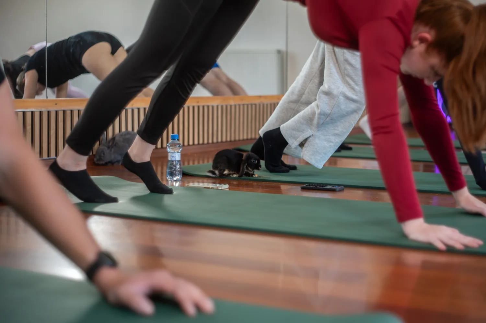
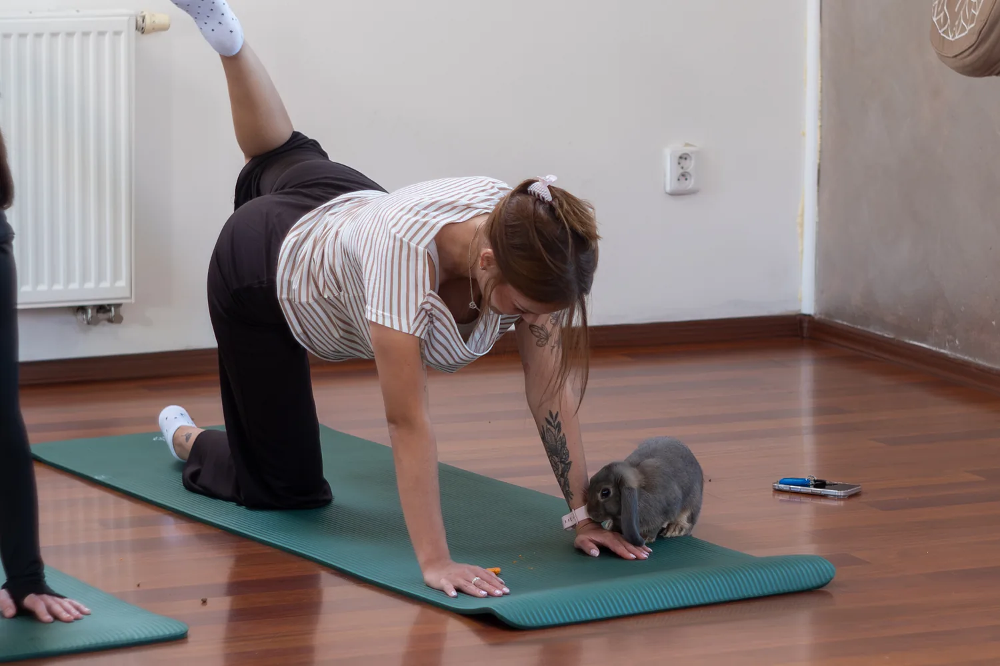

Blízkost
Protože si k vám někdo lehne
Králíček si klín vybere sám. Objednat se to nedá, a právě proto to sedne.


Lekce jógy v Ostravě, při které mezi vámi pobíhá sedm králíčků. Poznávají vás, nechají se pohladit a vy na chvíli zapomenete na všechny starosti.
Jóga je záminka. Tohle jsou čtyři důvody, které nám lidi říkají doopravdy.
Králíček si klín vybere sám. Objednat se to nedá, a právě proto to sedne.
Žádná zrcadla, žádné opravování. Lektorka ukáže a nechá vás to dělat po svém.

Nemůžete uspíšit zvíře, které si dává na čas. Tak si ho nakonec dáte taky.

Po měsíci znáte Pepu, Tofu i Mínku. Sanskrt počká, tahle hodina ne.

Máme jednu lekci pro dospělé a jednu pro děti s rodičem. Obě vedeme v Ostravě-Mariánských Horách — vyberte si a rezervujte rovnou tady.

Naše klasika. Pomalý pohyb a dech, u každé pozice se ukáže i jednodušší varianta.

Víc her než ásan. Děti se učí jedinou věc: být tak klidné, aby k nim někdo přišel dobrovolně. Funguje to i na rodiče.
Kód přijde e-mailem hned po zaplacení. Platí 12 měsíců a termín si obdarovaný vybere sám.
Koupit poukaz →Každý ze sedmi má jméno, povahu i svůj oblíbený kout sálu. Čtyři z nich poznáte hned při první lekci.
Nejstarší a nejklidnější. Když si lehne vedle vás, děláte savasanu správně.
Floppy ouška, nulové zábrany. Najde si nejpohodlnější klín a zůstane do konce.
Mladý a hopsavý. Zahřeje atmosféru dřív než vy svaly. Děti ho milují.
Sametový pohyb. Objeví se jako stín, chvíli je u vás a zase zmizí.
Vstup stojí 499 Kč a platí se online rovnou při rezervaci, takže máte místo jisté hned. Žádné čekání na potvrzení.
Sedm králíčků · každý s vlastním jménem
Ještě otázky? Sjeďte o kousek níž
Šest věcí, na které se lidi ptají nejčastěji, než přijdou poprvé. Nenašli jste odpověď? Napište na info@jogaskralicky.cz.
Rozklikněte kteroukoliv otázku
Vůbec ne. Většina hostů přichází úplně bez zkušeností. Lektorka vše ukáže a nabídne jednodušší variantu každé polohy. Jde nám o klid, ne o dokonalý tvar.
To je celý smysl. Králík nečeká, až dokončíte pozici, jde si po svém a vy se tím pádem taky přestanete honit. Když se k vám zrovna žádný nepřiblíží, není to nic proti vám. Je to jeho rozhodnutí.
Sál pečlivě větráme a čistíme, přesto při alergii na srst doporučujeme lekci zvážit nebo se poradit s lékařem. Rádi vám pomůžeme vybrat méně kontaktní termín.
Jen pohodlné oblečení a ponožky. Podložky, dečky i polštáře máme. Cvičíme bez bot a doporučujeme nepoužívat silné parfémy, králíci mají citlivý čich.
Výhradně online kartou při rezervaci, na místě se neplatí. Vstup stojí 499 Kč za osobu. Když rezervujete víc míst na jedno jméno, brána rovnou spočítá celou částku. Po zaplacení přijde e-mail s QR kódem, který ve studiu jen ukážete. Než platbu dokončíte, držíme vám místo 35 minut.
Jejich pohoda je u nás na prvním místě. Mají vlastní klidové zóny, kam se kdykoliv mohou stáhnout, pravidelné pauzy a veterinární péči. Na lekci jdou jen odpočatí a dobrovolně.
Sídlíme ve Fit&Fun Studiu v Ostravě-Mariánských Horách. Přijďte prosím o deset minut dřív, ať se stihnete v klidu zout a králíci si vás stihnou očichat.
Fit&Fun Studio OstravaTovární 486/7, 709 00 Ostrava-Mariánské Hory